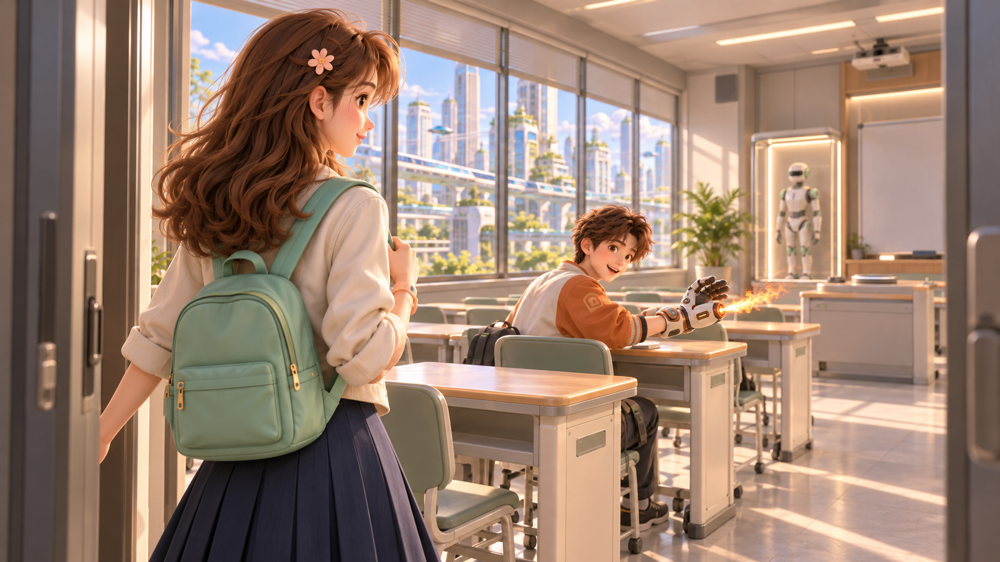
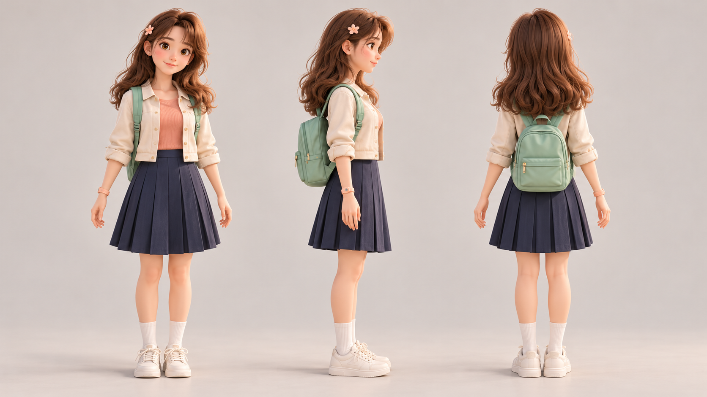
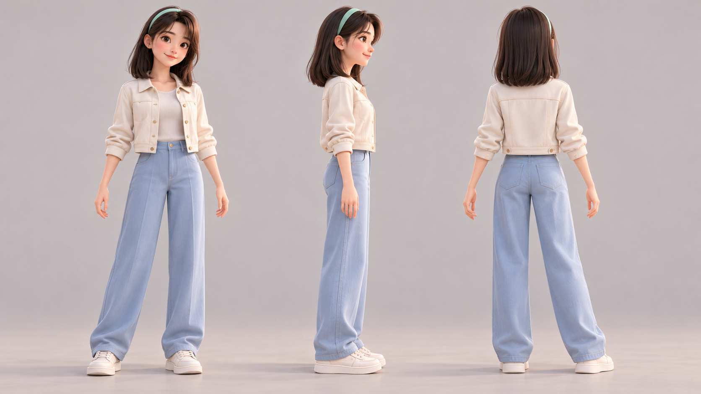
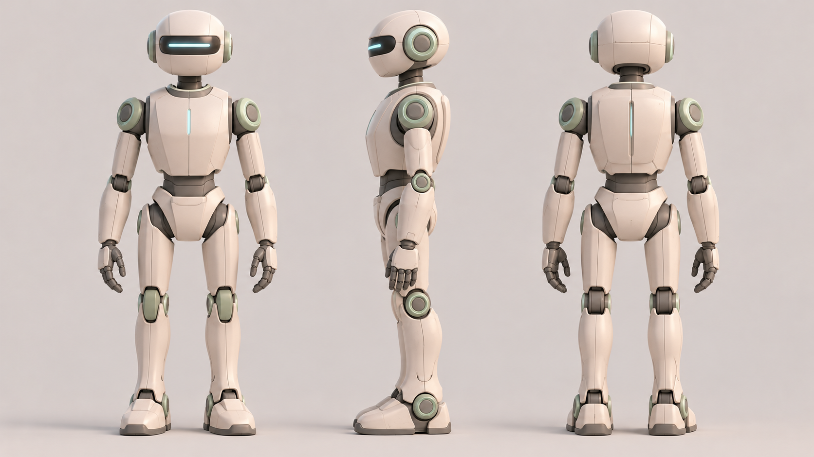

4个30秒段，每段10张。点击图片查看原图；角色图按需跨段复用。
SH01
SH11
SH01, SH03, SH04, SH05, SH06, SH08, SH11
SH04, SH07, SH09, SH10
SH01, SH02, SH03, SH04, SH07, SH09
SH05, SH06, SH08
SH01, SH02, SH04
SH07
SH09
SH10
SH12
SH18
SH12, SH13, SH14, SH15, SH16, SH18
SH13
SH14, SH15
SH15, SH16, SH17, SH18
SH16, SH17, SH18
SH17
SH16

SH19
SH27

SH19, SH20, SH21, SH22, SH23, SH24

SH23, SH24
SH25, SH26, SH27
SH19, SH20, SH21, SH22, SH23, SH24, SH25, SH26, SH27
SH19, SH24, SH26
SH20
SH21, SH24
SH22, SH24
SH28
SH35
SH33, SH34, SH35
SH28, SH29, SH30, SH31, SH32, SH33, SH34, SH35

SH34, SH35
SH29
SH30, SH31
SH31, SH32
SH33